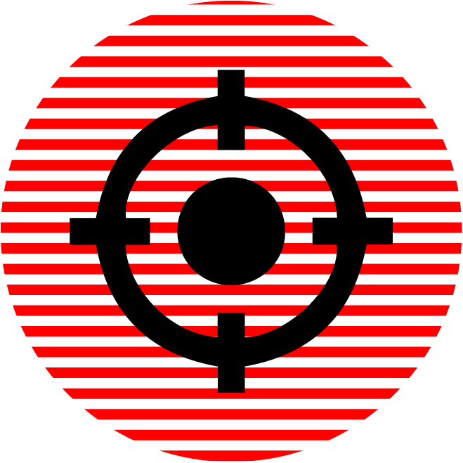
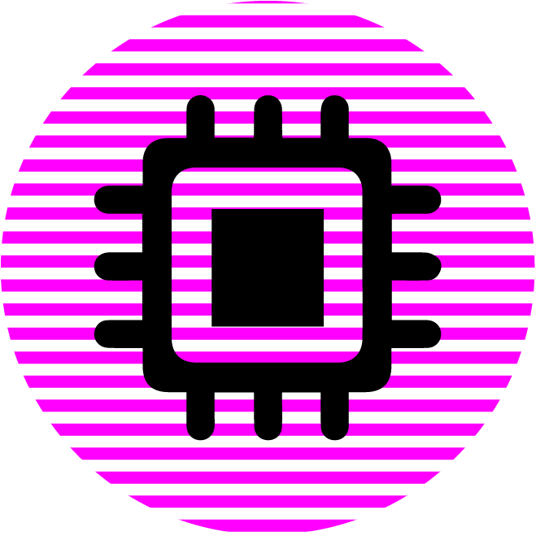
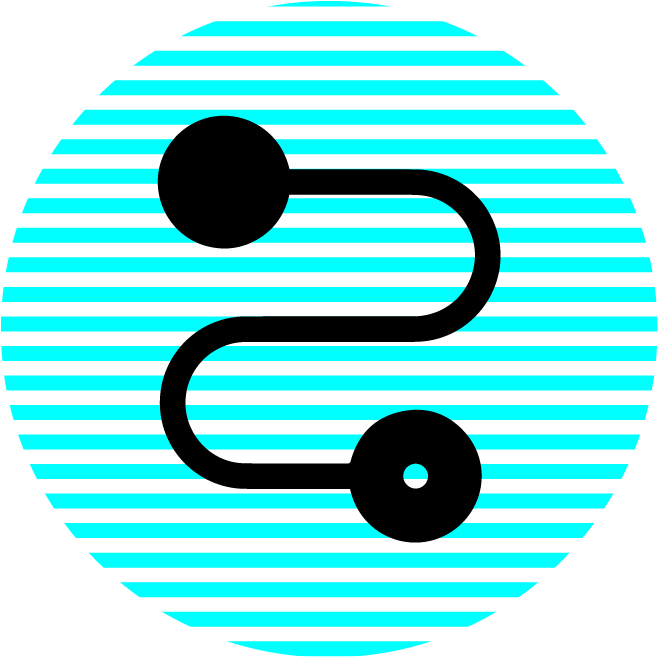

PANEL 1 // [VISTA]

_ En espera de objetivo para captura visual...
PANEL 2 // [TECNOLOGÍA]

_ Sensores inactivos...
PANEL 3 // [MAPA_ENLACES]

_ Red de enlaces sin trazar...
PANEL 4 // [METRICAS]

_ Sin datos para procesar...